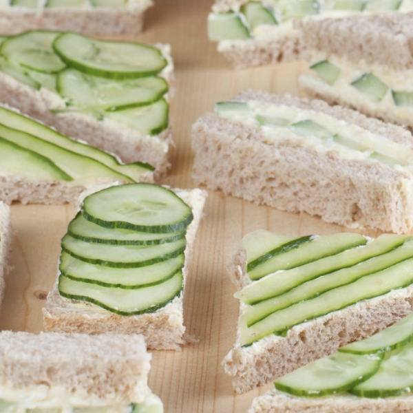
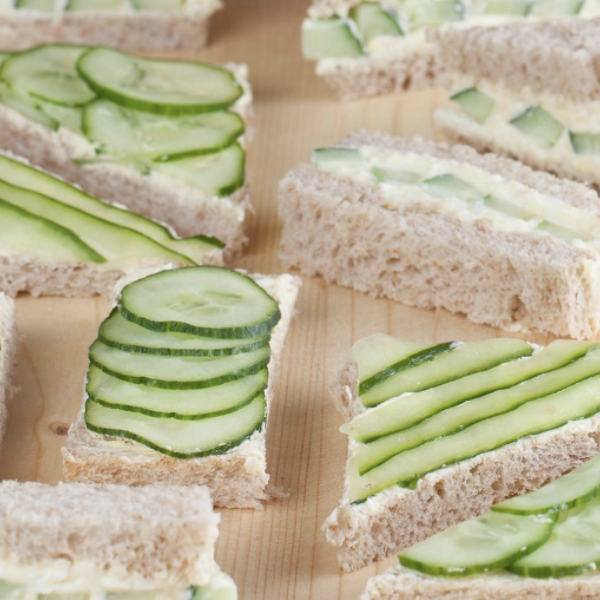

Cucumber Sandwiches
Cucumber and bread. Yummy.
We need to stress that whatever happens to you as a result of consuming Cucumber Sandwiches is your responsibility. You've been warned, and you can view our legal page for more info.
Ingredients
- 1 cucumber, peeled and thinly sliced
- 1 (8 ounce) package cream cheese, softened
- 1/4 cup mayonnaise
- 1/4 teaspoon garlic powder
- 1/4 teaspoon onion salt
- 1 dash Worcestershire sauce
- 1 (1 pound) loaf sliced bread, crusts removed
- 1 pinch lemon pepper (optional)
Directions
- Place cucumber slices between 2 paper towels set in a colander. Allow liquid to drain, about 10 minutes.
- Mix cream cheese, mayonnaise, garlic powder, onion salt, and Worcestershire sauce in a bowl until smooth.
- Spread cream cheese mixture evenly on one side of each bread slice.
- Divide cucumber slices over half of the bread slices; sprinkle lemon pepper on cucumber.
- Stack the other half of the bread slices with spread sides down over the cucumber slices to make sandwiches.
Photos
 
